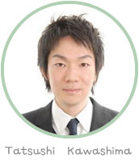

経歴
- 1981年2月26日生まれ 32歳
- 目白大学大学院心理学研究科 現代心理学専攻
- 日本大学経済学部産業経営学科卒業
- 社会心理学会会員
専門分野
- 対人コミュニケーション
- 社会心理学
- 言語コミュニケーション
- アサーティブコミュニケーション 他
10代の後半から20代の前半まで、過度のコンプレッスにより人間関係で深く悩む時期がありました。
死ぬほど悩んだコミュニケーションと言う分野で今度は私自身が社会に何か提供したい。
そして生涯を通して人と人とのコミュニケーションを研究することを決心しました。
弊社では科学的な思考を元に、 生徒さんと暖かいコミュニケーション講座を開いています。
講座でゆっくりと前に進んで行きましょう。是非いらっしゃってくださいね♪